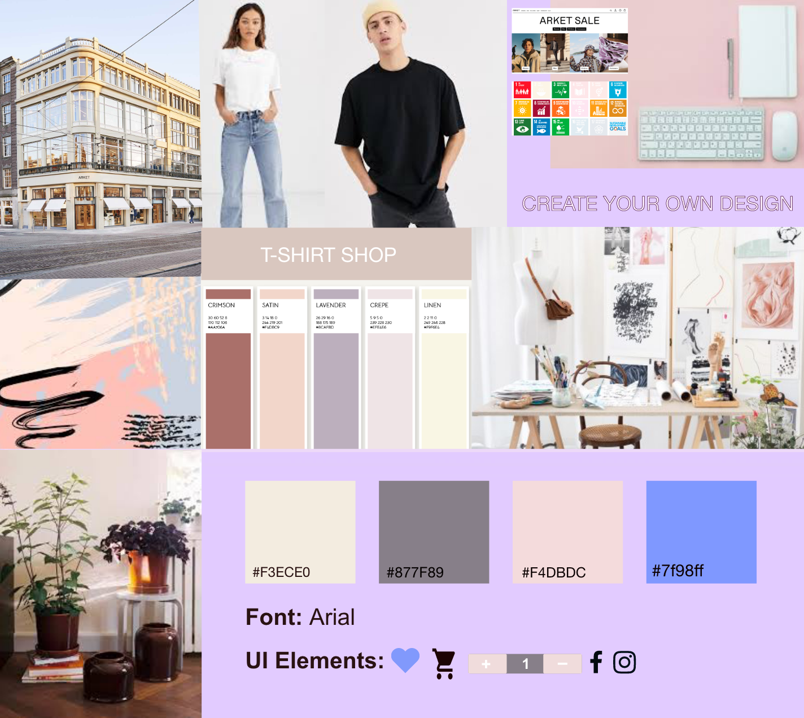

Grundlæggende UX
I dette tema fik vi en grundlæggende forståelse for samspillet mellem brugere og brugergrænseflader. Formålet var at få teori, værktøjer og metoder, som vi kunne benytte til research, design og test i en digital produktudvikling. Bl.a. ved at få erfaring med udvalgte UX-metoder, lære at indsamle og anvende empiriske data om brugere og brugssituationer f.eks. ved hjælp af desk research, observationsguides, interviews og tænkehøjttests. Vi blev også introduceret til, hvordan copy- og micro copywriting har betydning for brugerens oplevelse af et digitalt produkt. Ud fra vores data lavede vi en klikbar prototype til en hjemmeside i Adobe XD, som vi til sidst skulle pitche.
Vi fik til opgave at lave en hjemmeside, som skulle sælge t-shirts. Jeg startede med at lave desk research. Her dragerede jeg nytte af andres viden som jeg fandt på nettet og arbejdede videre med det. Vi skulle kigge på, user behaviors, user needs og user motivations. Når man køber produkter i butikker, skal alle ens sanser gerne aktiveres, det kan man ikke på samme måde, når man shopper online og derfor skal man have noget, som vejer op for dette og som gør at folk kommer igen. Jeg kom på en problemstilling og herefter fandt jeg webshops, som jeg synes havde lavet kreative løsninger på netop dette.
For at få dækket flest mulige vinkler, lavede jeg også observations research på et online køb og i en butik. Jeg lavede naturlig research, hvilket betød at jeg undersøgte deltagerens adfærd i et naturligt miljø. Her er typisk ikke nogle forudbestemte adfærdskoder. Man kan også lave kontrolleret observation og deltagende observation. Jeg indsamlede viden og data ved at observere en adfærd. Jeg brugte den til at aflæse træk ved den person, jeg observerede og noterede imens. Jeg tolkede ikke, men observerede blot. Dvs. Jeg noterede ansigtsudtryk samt kropssprog, men skrev subjektive tolkninger. Senere da jeg var færdig med observationerne, behandlede jeg min data. Jeg inddelte mine observationer i indsigter. Der findes tre hovedtyper af interviews: styret, ikke-styret og etnografisk. Styrede interviews er det mest normale og følger en spørgsmål-svar formatet. Ikke-styrede interviews bruges typisk, når deltageren ikke er tryg med direkte spørgsmål, her har interviewet mere karakter af en samtale. Etnografisk interview, hvor interviewet inkluderer observation af deltageren i deres daglige miljø. Jeg valgte at gøre brug af et styret interview. Hjemmefra forberedte jeg en interviewguide, så jeg på forhånd vidste, hvad jeg ville spørge om, og som jeg brugte til at få personen til at åbne sig op og vise sine følelser og tanker. Jeg startede med at få svar på mine lukkede spørgsmål, såsom køn, alder, civil status mm. Derefter stillede jeg åbne, uddybende og afklarende spørgsmål undervejs i interviewet.
Da jeg havde samlet og behandlet alle mine forberedende data, skulle jeg gå fra UX research til ide. Jeg kiggede på fællesnævnere, som kunne være en problemstilling og USP(unique selling proposition). Jeg gik i gang med en forkortet Design sprint. Jeg lavede lightning demos og four step sketch, hvor jeg bl.a. skitserede vores ide, lavede crazy 8's og en solution sketch.
Inden jeg gik i gang med at designe min prototype i XD, lavede jeg en wireframe. Det gjorde jeg, så jeg kunne fokusere på sitets layout og struktur før jeg skulle tage visuelle designvalg. En af mine krav til min hjemmeside var, at den skulle være nem at navigere rundt i. Brugeren skulle kunne opnå sit mål med navigationen så effektivt og behageligt som muligt. Der skulle være et hurtig og nem flow fra landingpage til slut(køb).
I denne sammenhæng var det også vigtigt at kigge på de konventioner, som der er i web sammenhænge, da det kræver færre ressourcer for brugeren at navigere i mønstre, de i forvejen kender fra andre sites. Jeg kiggede på placeringen, det visuelle og navigationen. Jeg valgte at have globale indholdskomponenter; brugermenu som førte til en menunavigation, hvori der også var en søgefunktion, en footer med kontaktinfo m.m. samt logo som skulle fungere som hjemknap til landingpage, og en brødkrummesti. Men også lokale indholdskomponenter såsom billede og tekst til forside, produktside med produktbeskrivelse, kurv og pris, call to action elementer og forms til brugerens input.
Jeg valgte, at mit site skulle laves i mobil format, da jeg ud fra mine data fandt ud af, at de fleste starter deres købsrejse på mobilen, og derfra enten falder fra eller gennemføre deres køb på desktop. Jeg ville derfor lave et site, som var så brugervenligt som muligt, så jeg kunne beholde kunden på siden fra landingpage til slut(køb). Jeg lavede en low fidelity prototype i XD. Samt moodboard og styletile. Herefter tog jeg udgangspunkt i det og lavede min highfidelity prototype, som visualiserede et mere visuelt og klikbart produkt ved hjælp af transitions, UI kits ( design patterns) og som indeholdt copy, microcopy og keywords.
Til sidst skulle vi lave en tænkehøjt test af vores færdige produkt og herefter pitche vores ide i grupper ud fra vores samlede dataindsamling og Hifi prototype. Til at pitche kan bruge NABC metoden dvs. Needs, Approach, Benefits og competion og evt. action. Det er vigtigt at have en fængende pitch for ens interessenter, da det er her, man er købt eller solgt. Det er her ens pointer og kreative ideer skal skinne igennem og få pitch-modtageren til at sige ja. Vi fik efterfølgende peer to peer feedback, hvilket gav nye synspunkter og var et godt springbræt ift. forbedringer til ens prototype og pitch.
